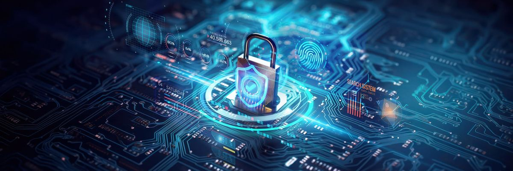
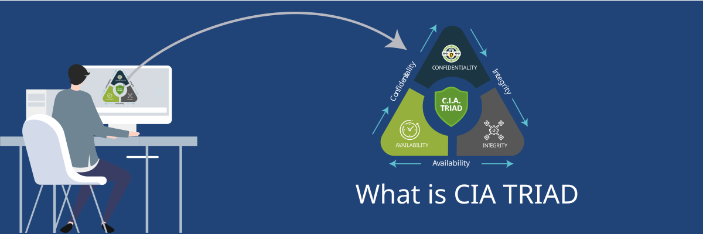

Understanding Cybersecurity

What is Cybersecurity?
Cybersecurity is the practice of protecting computers, networks,
systems, and data from cyber attacks and unauthorised access.
Key Features of Cybersecurity
-
Authentication:
Verifies that users are who they claim to be.
-
Access Control:
Limits what users can access or change.
-
Encryption:
Protects data by converting it into an unreadable format.
-
Threat Detection:
Identifies suspicious activity and potential attacks.
-
Data Backup:
Creates copies of important information in case data is lost or damaged.
The CIA Triad

One important part of cybersecurity is the CIA Triad. It consists
of three main principles:
-
Confidentiality:
Keeps information private and accessible only to authorised users.
-
Integrity:
Makes sure information is accurate and has not been changed
without permission.
-
Availability:
Makes sure systems and information are available when needed.
Advantages and Challenges
| Advantages |
Limitations & Challenges |
| Protects personal and company data. |
Security systems can be expensive. |
| Reduces the risk of cyber attacks. |
Cyber threats are constantly changing. |
| Builds customer trust and protects company reputation. |
Security requires regular updates and maintenance. |
| Helps organisations keep their systems running safely. |
Strict security rules can sometimes affect productivity. |
Workplace Applications
Cybersecurity is used in workplaces to protect employees, systems,
and company information.
- Multi-Factor Authentication (MFA) protects employee accounts.
- Firewalls help block unwanted network traffic.
- VPNs help secure remote connections.
- Antivirus software protects workplace computers from malware.
- Backups help recover important data after an attack.
← Return to Group Portal